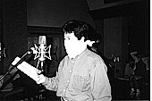
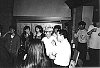
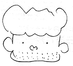

97.5.1（木）
明日のカッティングに向け、今日の6時イマジカ入れがデッドライン。4時に素材が全て完成し、撮影に降りるが、いつもなら本当にぎりぎりまで作業を続ける演助の伊藤君は「こんなに順調に作業が終わるはずがない、何か忘れているに違いない」と社内を考え込みながらうろうろ。結局フィルムは無事イマジカへ全て送られる。
D1パートまでの差し替え分をオムニバスへ返却。
ツバメの巣では、雛が順調に育っている。因みにずらしてあるとはいえ車のフロント部分が若干巣の下に来ているマーチは、ツバメの糞だらけ。
97.5.2（金）
D2パートのカッティング。全編の総尺128分3秒5コマ。
動画も残り4CUTとなり、ほとんどの動画スタッフは明日から制作休暇。
美術スタッフが3階で、自作タイ風カレーや焼き鳥で簡単な打ち上げ。
97.5.3（土）
昼から、西桐氏と共に残りのCUTのなかで最も大変な360フレーム300枚のマシンがけを始める。同じ動画からまったくずれていないセルを3枚ずつかけなければならないものもある。しかし思うように写ってくれない。2分間に1枚程度のペースでしかかけられない。しょうがないのでゴールデンウィーク中にもかかわらず、マシンメンテのプロ村尾さんに来てもらい、マシンを線に合わせて調整してもらう。写りが格段に良くなる。さすが。ところで村尾さんは、今日38度の熱を出して寝込んでいたとか。申し訳ない。
深夜12時すぎ、最後の動画がアップ。
97.5.4（日）
今日も再び360フレームのマシンがけ。8時終了を目指してかけ始めるが、続けてかけているとすぐマシンが加熱して、カーボンが浮いたり、極端に写りが悪くなる。昨日、「明日も写らなかったら電話して」と言って帰って行った村尾さんに再びTEL。夜10時すぎからは、演助の有富君も参加し、ようやくかけ終わったのが深夜1時半。
動画チェックが全て終了。
宮崎監督が早速机の周りをかたずけ始める。膨大に溜まったCDを借りたものと自分のものに分け、自分のものは「御自由にお持ちください」の貼紙を付けて大放出。ところがよく見るとその中に私の貸したCDが何枚も…。あわてて既に持って行った人からも自分のCDを回収。
97.5.5（月）
朝から、守屋、森の両名が、昨日かけ終わった大判マシンのチェック。「頼むからずれていないでくれ」との祈りが通じたか、今日のところはずれはなし。チェックは1日では終わらず、明日も続けられる。
97.5.6（火）
待機中のメインスタッフは、宮崎監督も含め例の大判CUTのマスク塗り。
望月さんがついに隣駅の武蔵小金井駅前に引っ越し。早速深夜までお仕事。
97.5.7（水）
色指定が全て終了。夜スタジオキリーに最後のCUTを入れる。
０号試写までの最終スケジュールが完成。
作監作業を終え、待機中の高坂氏は、「ツール・ド・信州」に向け毎日50キロ以上のトレーニングをしている。一方、宮崎監督に「いつもリタイアの言い訳ばかり探しているのだろう」とからかわれている、某制作デスクは、先日自転車で転倒し、肋骨を痛めてしまったため、宮崎監督に「リタイアの事ばかり考えているから転倒するのだ」と再び格好の攻撃目標となっている。
97.5.8（木）
ロール7.8.9の差し替え。次の差し替えは15日の予定。
瀬山編集に川端氏と出向き、最終スケジュールを見ながら原版組みの打ち合わせ。
「野中くん」「よねちゃん」に引き続き、鈴木プロデューサーが創作したニュー・キャラクター「室井さん」。新橋の出版社によく似た人がおり、その人は「もののけ姫」担当でもあるらしい…
97.5.9（金）
特効入れのCUTががんがん上がってくる。残りCUTの８割り方に特効が有るため、特効はこれからが修羅場。
次号のアニメージュがジブリに送られてくるが、「野中くん」の漫画が最近イジメに入っていると思うのは私だけだろうか？
合間をぬって使用済みの原画や線撮り素材の整理を始めるが、量が膨大である。だてに２年もやってた訳ではない。
97.5.10（土）
MITスタジオにてD2パートのアフレコ。朝10時からスタートしたが、夜11時までかかってしまう。
97.5.11（日）
宮崎監督はお休み。
デジタルペイント班は今日も必死の作業を続けているが、それを手伝っているデイビッドは、英語がぺらぺらな為、シリコンのヘルプ機能（当然英語で書いてある）を使って、石井君も知らない裏技を開拓しながら色を塗っている。
97.5.12（月）
ツバメの巣が崩れた。残っていた卵は落ちて割れ、ツバメは何処かに行ってしまった。昨年のように猫がやったのか、自然に崩れたのかは定かではないが、なんにしても後味は良くない。
作画からの簡単なリテークが1CUTあり。
97.5.13（火）
10日分ほど溜まってしまった制作実績表を一気につける。
外注に出した仕上げの残り枚数が、まだ5,000枚ほどある。ただし、1CUTあたりの平均枚数が130枚を超えているため、CUT数にするとあと40CUTも無い。もうすぐだ。
97.5.14（水）
今日のガヤでアフレコが終了。ガヤ録りということでマスコミはそれほど来ていなかったが、「もののけ姫」とは関係の無い某広告代理店Ｈ報堂の藤巻氏（「まりちゃんず」のボーカルでもある）が何故かアフレコに加わる。鈴木プロデューサーは「これで同社取り扱いのCFで「もののけ姫」を宣伝してもらおう」と画策している。
ついでに鈴木プロデューサーも「耳をすませば」の南老人に続き、アフレコに参加。役は秘密。本人曰く「もっとちゃんとした役じゃないとだめだ」と言いながらもまんざらでもない様子。


明日の差し替えに向け、イマジカに持ち込み、回収。
スタジオＭと片山さんが手持ち終了。
コミックボックスの三好氏以下3人が来社し、「もののけ姫」特集号の取材について打ち合わせ。公開前の7月10日には出したいという…。私の予想は１月遅れ。
97.5.15（木）
差し替え前のラッシュチェックが行われるが、一気に40CUT以上のチェックをしようとしたため宮崎監督に「こんなにいっぺんにやってはチェックしづらいだろう」と怒られる。
ロール5～9まで差し替え。
明後日放送予定の「ウルトラ○ンティ○」の演出が実相寺昭雄と聞いて、興奮して夜も眠れない者が社内に数人いる。
97.5.16（金）
仕上げを手伝ってもらっていた東映動画が作業終了。
美術の黒田氏が体調不良でお休み。残る背景は大丈夫なのか？
Ｈ報堂藤巻氏、今人気のキティちゃんの人形焼きを片手に来社。15日のアフレコの様子について聞いてみた。
| ・・・・ | どんな役だったんですか。 |
| 藤巻氏・ | わからないけど、武士とか農民。 |
| ・・・・ | 出来はどうでした。 |
| 藤巻氏・ | ちょっと不満。やり直したかったが、他にも待っている人がいるのでできなかった。まあ、点数にして60点ぐらいかな。 |
| ・・・・ | 鈴木さんのアフレコはどうでした。 |
| 藤巻氏・ | 鈴木さんのおかげで「もののけ姫」はダメになった。だって「たたりじゃ～」だよ。 |
| 鈴木氏・ | 何言ってんの。僕の役は侍の中でも立派な侍で、監督に是非やってくれと言われてやったんだよ。 |
| 藤巻氏・ | 立派って言ったって、「たたりじゃ～」なんていう侍いる? 下っぱだよ。 |
| 鈴木氏・ | 最初、「ウォーとかウァーとか言ってください」って言われたんだけど、セリフがなきゃ嫌だと言ったら、じゃ「たたりだ～」にしようということになったんだ。僕役作りもしたんだよ。ただ、「たたりだ～」じゃつまらないから、初めどもって「た、たたりだ～」にしたんだ。そしたら、若林さんに「どもらないで普通にやってください。」と言われちゃってさあ。タエ子ちゃんの気持ちがよくわかったよ。役者と監督の対立というかさ。 |
| ・・・・ | 藤巻さんはどんなセリフだったんですか。 |
| 藤巻氏・ | サンが跳ぶシーンで「跳んだ」と5人ぐらいで言うところと、侍の役で「くそう、浅野のなんとか……」忘れたけど、そういうセリフだった。 |
| 鈴木氏・ | セリフ忘れるなんて大した役じゃなかったからだ。 |
| 藤巻氏・ | 鈴木さんのセリフは、完成したら聞こえないよ。でも、僕のセリフは消せないシーンだからね。 |
| ・・・・ | クレジットに名前が入るんですか。 |
| 鈴木氏・ | （小声で）入らない、入らない。 |
| 藤巻氏・ | 友情出演ということにしといて下さい。 |

「鈴木さんのアフレコはどうですか」の質問から、口を挟む間もなく話がエキサイトしていった。一部編集してあるが、この場の雰囲気は十分すぎるほど伝わると思う。
今年の夏「もののけ姫」を観る人は、「跳んだ」「くそう! 浅野の～」「たたりじゃ～」というセリフには注意しよう。
97.5.17（土）
宮崎監督はアバコスタジオでオーケストラ録りの立ち会い。
デジタルペイントのDRが作業終了。
97.5.18（日）
デジタルペイント、CG部と撮影部が出社。デジタルペイントの社内作業はほぼ終了。あとは石井君の後処理と、合成作業のみ。
97.5.19（月）
若林さんから「アカデミーリーダー」が欲しい、と連絡をもらうが、聞いたことがないので奥井さんや川端さんに質問するも、二人とも知らないという。イマジカに問い合わせたところ、なんのことはないフィルムの頭につく劇場用のリーダーのことだった。
遅れている黒田さんの美監作業は、なんとか今週一杯で完成しそう。これ以上遅れるとまずいぞ。
コミックボックスが安藤氏のインタビューに来ると言って夜まで連絡無し。安藤氏はかなりむっとしていた。結局明日に延期。
97.5.20（火）
例の360フレームの、完成セルから起こすリスマスクを150枚程マキプロに発注。
今日から作画が、制作休暇を終え出社。テレコムの作品「スーパーマン」を手伝うための準備に入る。作監は芳尾氏。明日打ち合わせの予定。
宮崎監督が次作研究中の高畑監督に机を譲ると宣言。さっそく机に「本日よりここはパクさんの席になりました」と貼紙を出す。
97.5.21（水）
11時より会議室において職場委員会が行われる。徳間書店との合併等、ジブリの今後についての話題が中心。
スタジオアドに絵の具を取りに行くが、思ったより量が多く、シビックシャトルにぎゅうぎゅう詰めにしてなんとか積めたものの、車がシャコタン状態となる。この状態で関越自動車道を爆走。
ロール5～9まで差し替え。夜8時すぎにオムニバスにラッシュを返却すべくジブリを出るが、またまた中央線で人身事故の為電車がストップ。またかい。
会議室にてスーパーマンの打ち合わせ。午後2時から夜10時頃までかかる。
97.5.22（木）
高畑監督からジョン・ハブリーの作品が見たいとの命を受け、アヌシーへ行く直前の片山雅博氏からビデオを借りる。
今日から宮崎監督は、音楽のトラックダウンにワンダーシティに行く予定であったが、向こうの準備が整わなかった為、明日からに延期。
97.5.23（金）
今日も音楽トラックダウンが延期となる。宮崎監督はやることが無くなったため近所を散歩。
作業が終了したIMスタジオから絵の具を回収。
制作・田中と制作業務望月氏がお金を出し合い、おやきと御手洗（「みたらし」であって「おてあらい」ではない）団子を山盛りで買ってくる。御手洗団子の定義について若干議論アリ。
97.5.24（土）
スタジオキリーで作業中の、仕上げ最後の3CUTが、予定より3日早く、27日（火）にアップ予定。
引っ越したばかりの望月氏だが、隣のビルの飛び降り騒ぎで朝早くたたき起こされる。警察と消防隊は、小金井街道を通行止めにして道路にエアバックまで敷いて説得していたとか。
制作の居村君が自転車で通勤途中、車と接触、顎と膝を強打し、救急車で病院に運ばれる。骨には異常が無かったものの顎を数針縫う怪我。
ラッシュチェックが行われる。
5時よりワンダーシティにて宮崎監督立ち会いのもと音楽トラックダウン。
97.5.25（日）
宮崎監督はテレセンでプリミックスの立ち会い。
撮影の残りが22CUTとなる。その残りは、ほとんど特効待ち。
97.5.26（月）
宮崎監督は今日もテレセン。
仕上げの残りがあと１CUTとなる。
動画は今週もエヴァンゲリオンのお手伝い。
97.5.27（火）
スタジオキリーから、最後の仕上げ上がりを引き上げる。
今日もテレセンでのプリミックスに立ち会う予定だった宮崎監督だが、中止になったため、急遽鍼へ。
明日の差し替えに向け、イマジカに持ち込み、回収。
谷藤氏と福留君の社内の特効作業が終了。あとは外の榊原さんと谷口さんが持っている3CUTのみ。谷藤さんと相談し、全体がなんとか木曜日いっぱいに上がるように、谷口さんから若干枚数を引き上げることに。
ということで、こぼれるデジタルの数CUT以外は、今月いっぱいに差し替えられる段取りがつく。
作画からの直しが1CUTあり。
97.5.28（水）
ラッシュチェックあり。いくつか素材を作り直したり、背景に手を入れなければならないリテークが出る。
テレセンで全編のラフミックス試写が行われる。その後差し替えの為、ラッシュを瀬山編集に持ち込む。
夜、瀬山さんからTEL、CUT1,323を次のCUTとのアクションのタイミング上9コマほど切りたいという。音響作業の関係上、尺を変えることが可能かどうか若林さんに問い合わせるも、既に帰宅した後。明日朝一で宮崎監督も含めて相談。
97.5.29（木）
尺の問題については、若林さんが「スケジュール的に問題が起きる可能性がある」と心配しながらもなんとか了承してくれる。
残りの特効2CUTが上がる。ところが夜になってそのうち1つにリテークが発覚。谷藤氏と榊原氏に手伝ってもらい、なんとか日にちが変わらないうちに直しきる。
タイトルのオプチカル出しについて川端氏と瀬山氏が相談。
撮出しの残りがあと1CUTとなる。
97.5.30（金）
朝、若林さんから、宮崎監督の指示で口パクがずれてるものをリテークにすることになったとTEL有り。夕方リストが到着予定。
リストを見てみると、約30CUT程ある。とにかく宮崎監督がテレセンから帰ってくる前に、問題のCUTを撮済み置き場からひっぱり出して、伊藤氏がシートのチェックを開始する。
本撮最後のCUTを撮入れ。
深夜リテーク分を撮入れ。
97.5.31（土）
11時よりラッシュチェックあり。宮崎監督はテレセンへ行く前にチェック済み。
上がったラッシュを再び差し替え。
スタジオキリーの岩切氏が挨拶に来社。予定より早く上げてもらった私はひたすら頭を下げまくる。
ＣＧ室の作業が全て終了。ＣＧルームにてシャンペンで乾杯。
| 次のページへ |
| 日誌索引へ戻る |
| 「もののけ姫」トップページへ戻る |